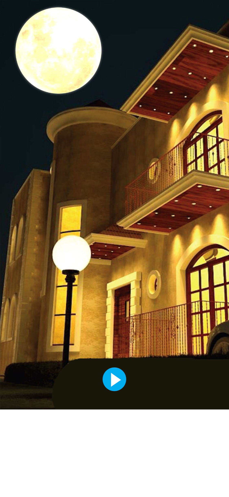

<audio id="oud" src="oud.mp3" preload="auto"></audio>


<script>

  function oud() {
        var audio = document.getElementById("oud");

        if (audio.duration > 0 && !audio.paused) {
            audio.pause();
            audio.currentTime = 0;
        } else {
            audio.play();
        }
    }


</script>


<map name="image-map">
  
  
    <area target="_blank" alt="" title="" href="" onclick="javascript:oud(); return false; " coords="434,1772,686,1960" shape="rect">

</map>

